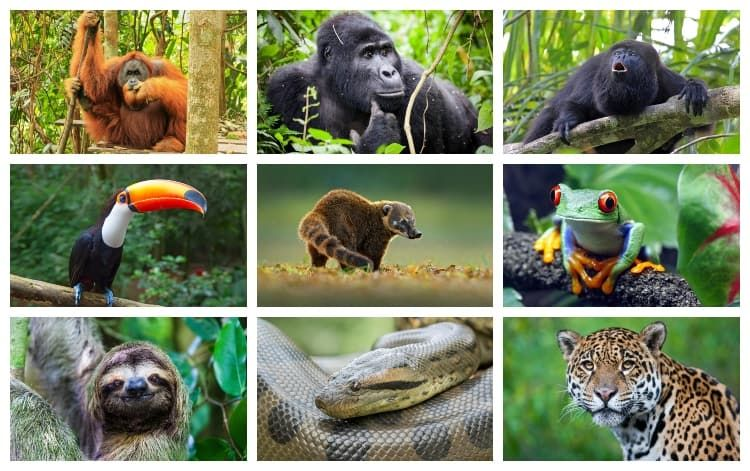
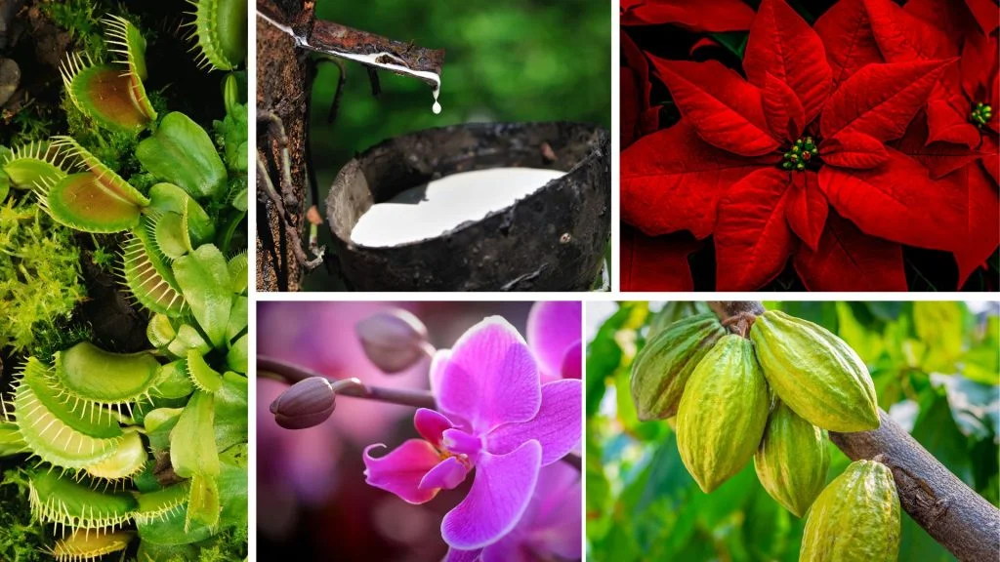
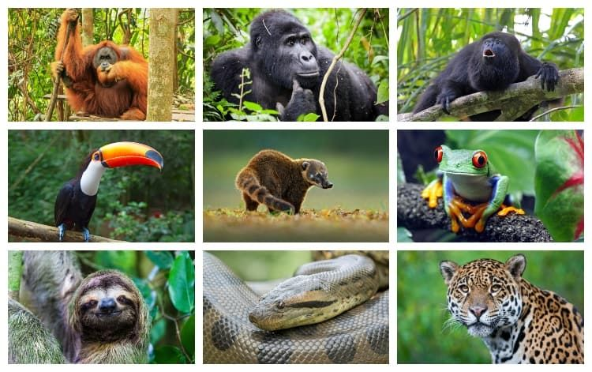
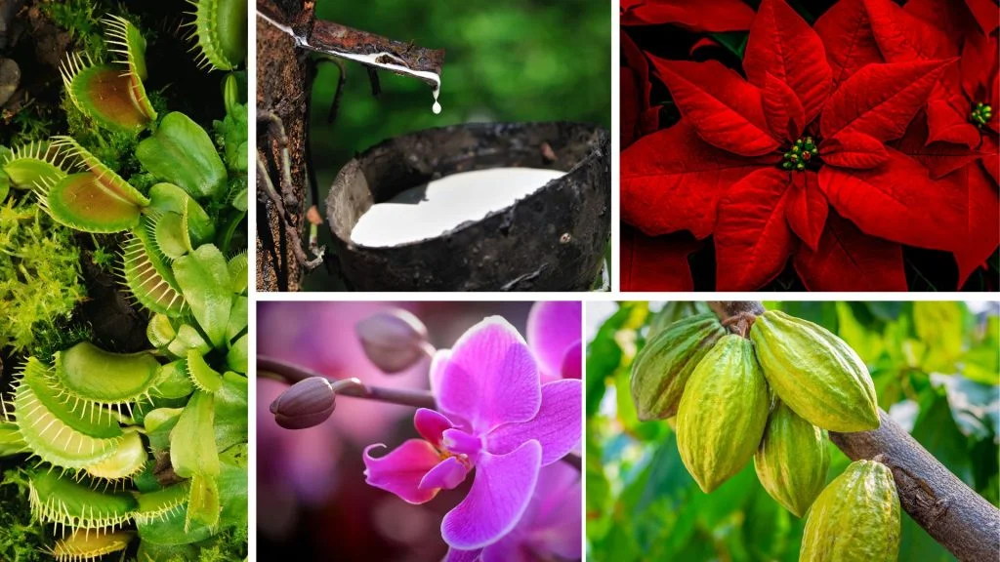

Tropical Forest Biome
Location
They are located in the equatorial zone and are typically found closer to the equator. They can be found in Central and South America, Africa, South Asia and Australia.
Climate
The climate is hot, wet, and humid. it is warm all year, with average daily temperatures between 68°F and 77°F. The coldest month has a minimum temperature of at least 64.4°F. Tropical rainforests receive the most rain of any biome, with annual rainfall ranging from 79 to 394 inches, it is always raining.
Fauna (Animals)
There are a variety of animals in the Tropical Forest. They range from beetles, to birds, to kangaroos. The most commonly found animals include different species of:
- Parrots
- Monkeys
- Bats and Rodents
- Deer
- Toucans
- Apes
There are also also unique animals like tree kangaroos and the bird of Paradise. These fauna are only found in Australia and New Guinea.
Flora (Plants)
In the Tropical Forest, there is a diverse population of flora. They include many types of trees, flowers, and fungi. The large trees that are commonly found are Conifers and Teak trees. Next, the most common flower in tropical forests are orchids. This single species usually dominates over the other flowers. Lastly, the fungi in tropical rainforests include:
- Epiphytes
- Mosses and algae
- Litchens
- Epiphytic orchids
 


